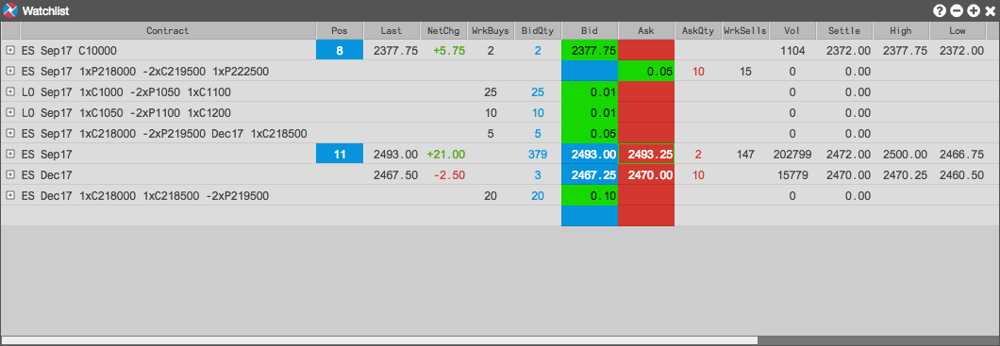

The Watchlist widget provides you with the ability to manage and monitor market data for selected options and futures instruments, as well as monitor Greeks and theoretical values of user-defined options strategies before actually submitting them to the market. Instruments added to the Watchlist persist over exchange sessions, which provides you with the ability to act upon them at any time.
For options strategies that you create and send to the Watchlist and do not exist at the exchange, the widget calculates an implied spread price for your user-defined strategy based on the prices of the outright leg markets, and displays the implied spread price in the list. If the strategy you create is already available at the exchange, the Watchlist displays the actual market for the strategy.

Using the Watchlist to monitor and trade instruments and strategies, you can:
When sending an instrument to the Watchlist, the widget opens seeded with the selected instrument. Only individual instruments or strategies can be sent to the Watchlist widget and not their products or product families. If the instrument exists at the exchange, orders can be submitted for an instrument in the Watchlist using the same functionality as the Order Ticket.
To open a Watchlist: